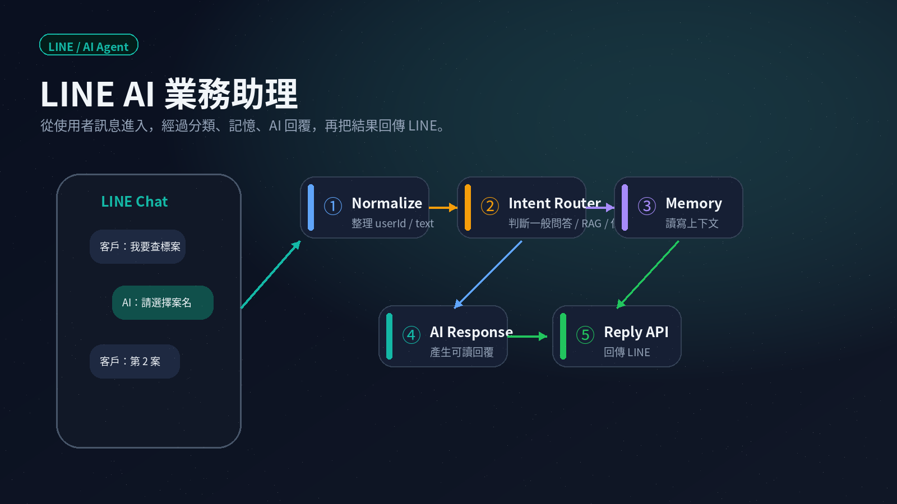
LINE / AI Agent / n8n
LINE AI 業務助理
手機聊天情境連到後端節點流程，說明 LINE 訊息如何進入、分類、觸發 AI 回覆與回傳。
Workflow Portfolio
每張圖都對應一種不同的自動化情境。這一頁不是單純放流程圖， 而是把 AI 助理、文件搜尋、OCR、RAG、資料庫與產品規劃整理成可展示的作品集。

手機聊天情境連到後端節點流程，說明 LINE 訊息如何進入、分類、觸發 AI 回覆與回傳。
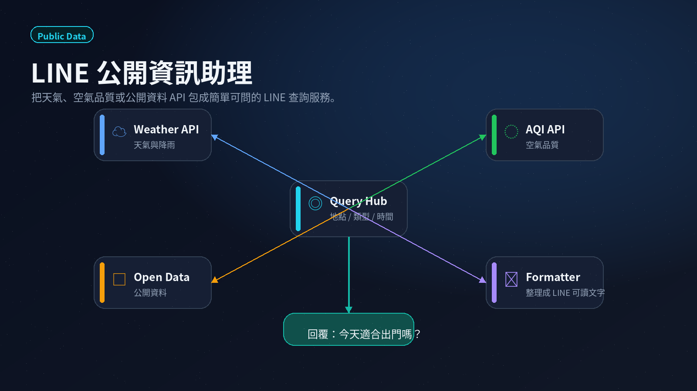
把天氣、AQI 或公開資料 API 包成 LINE 可問的服務。
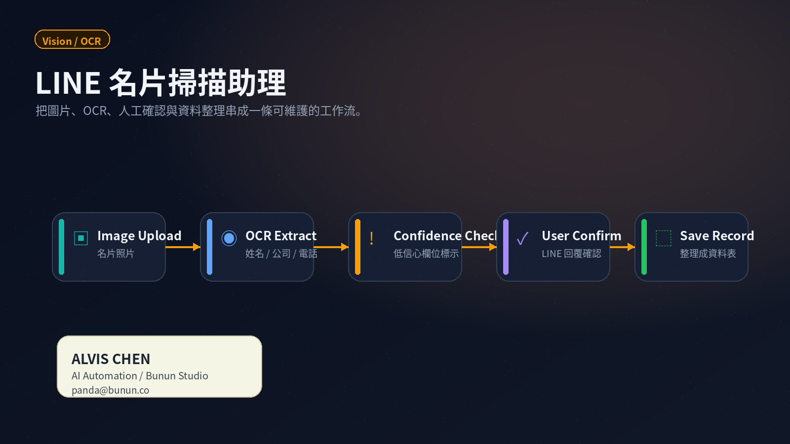
從圖片進入 OCR，再整理聯絡資訊與確認欄位。
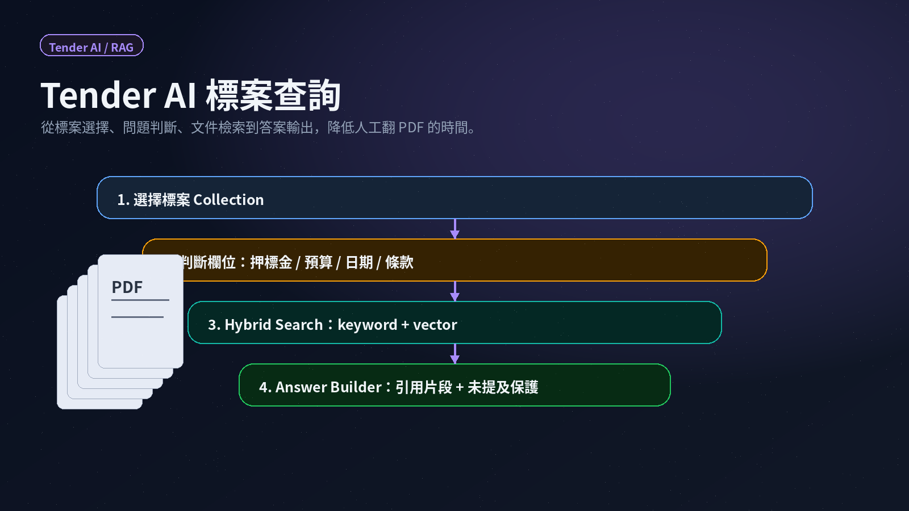
漏斗式查詢圖，呈現標案問題如何經過文件檢索、條件整理與 AI 回答。
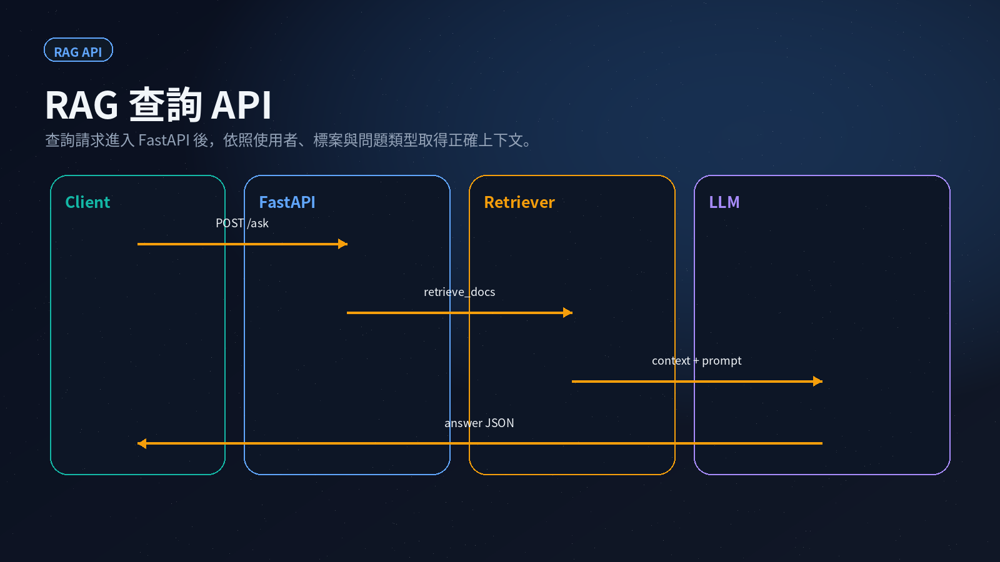
用 sequence diagram 說明查詢、檢索、重組與回答的順序。
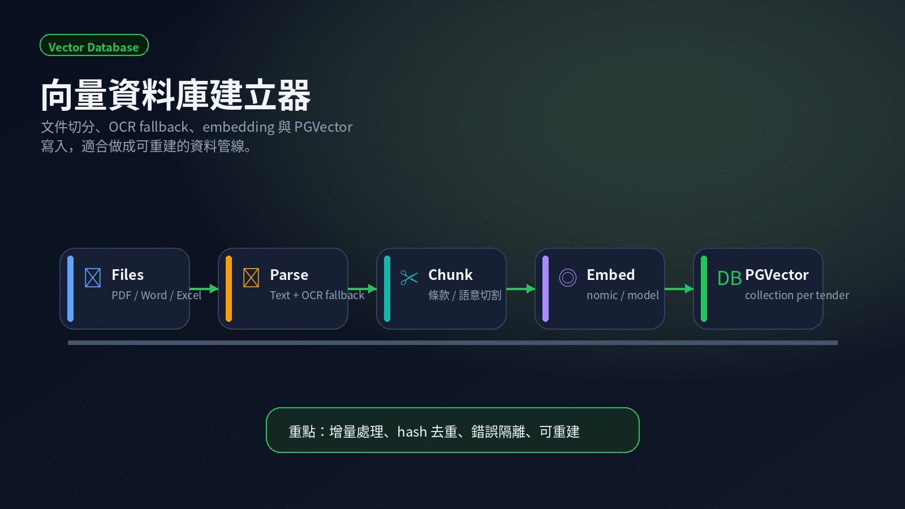
把文件切分、嵌入、寫入資料庫與重建索引拆成可維護流水線。
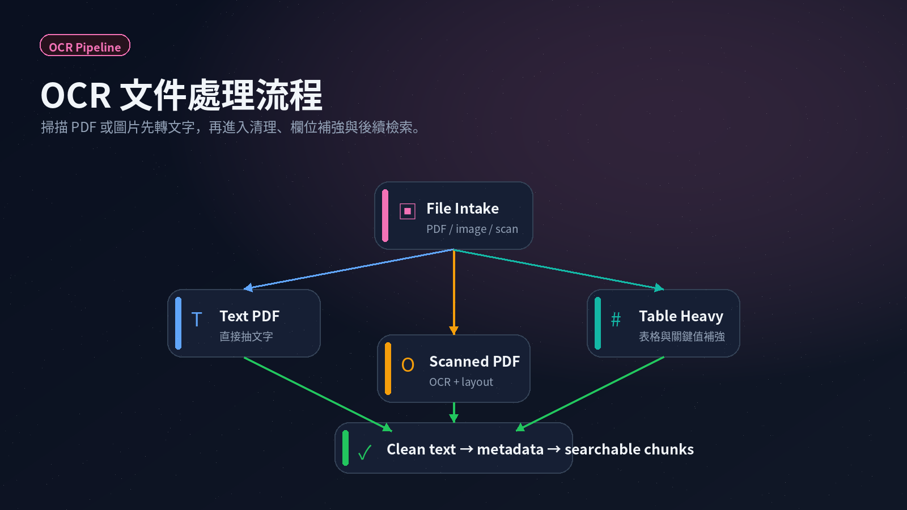
用文件處理決策樹呈現掃描、辨識、清理與失敗回補。
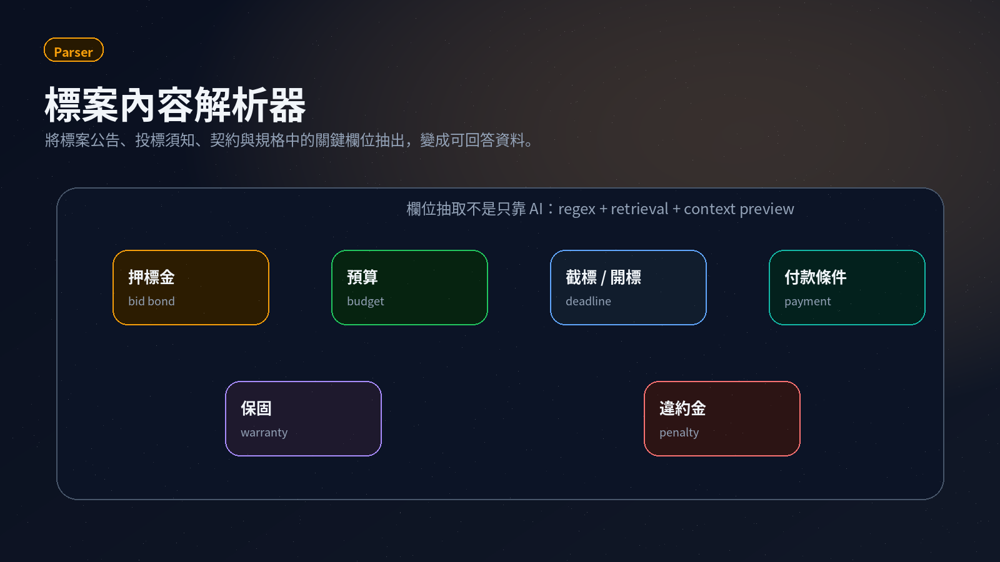
把標案欄位、日期、資格與摘要整理成 dashboard 型態。
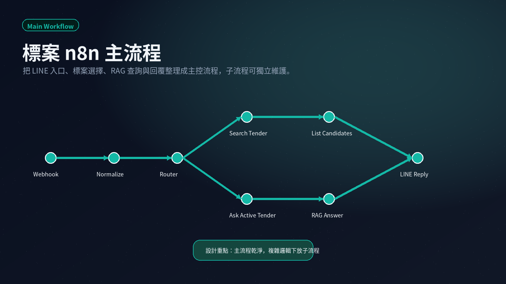
以地鐵線路圖方式呈現 Tender AI 主流程與子流程的串接。
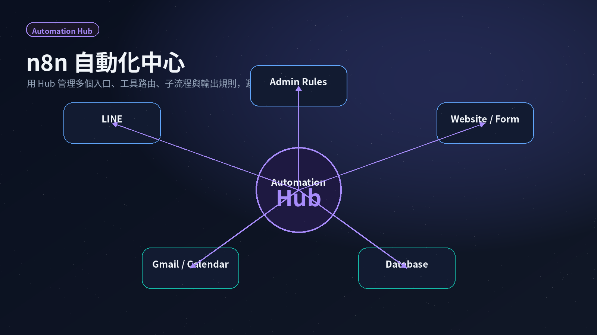
Hub-and-spoke 放射圖，呈現自動化中心如何管理入口、路由、子流程與輸出規則。
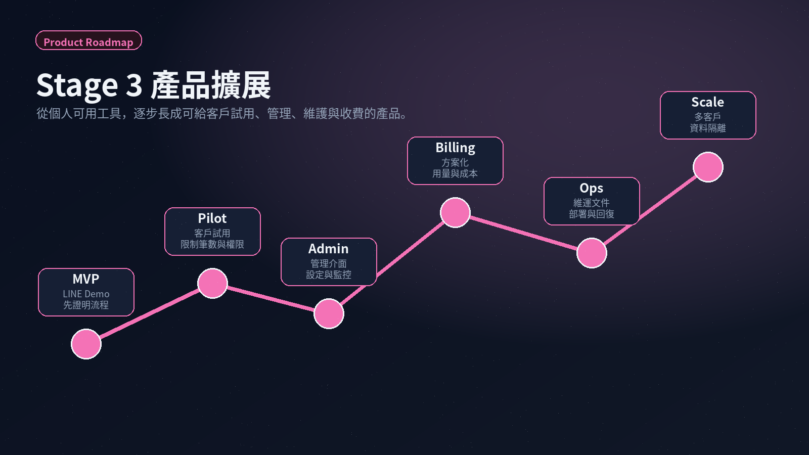
把未來產品化、管理介面、權限、營運與客戶維護功能整理成 roadmap。